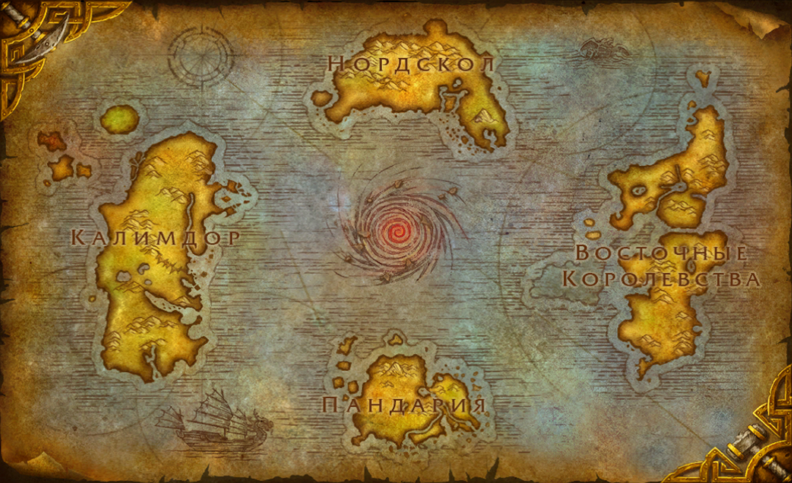
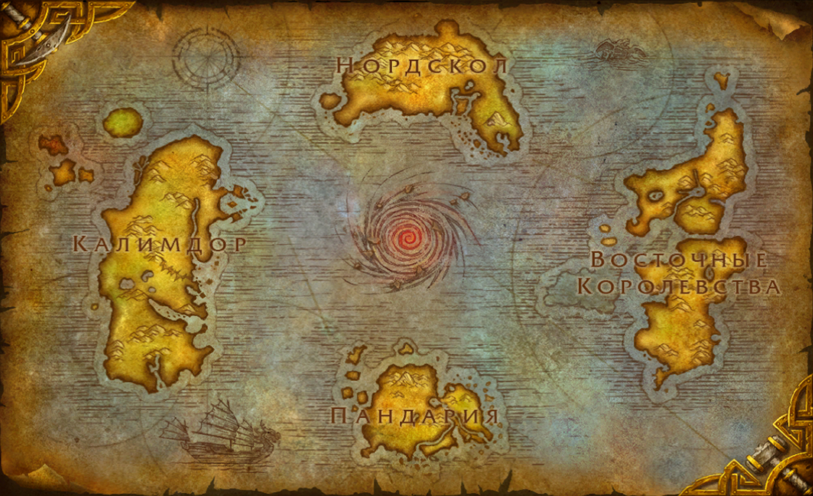

Азеро́т представляет собой планету, напоминающую Землю. Большая часть описанных событий вселенной Warcraft происходит именно на ней. Мир Азерота включает в себя следующие континенты: Восточные королевства, Калимдор, Нордскол, Пандария, Расколотые острова, Зандалар, Кул-Тирас и прилегающие к ним острова. Массив Восточных королевств включает в себя 2 субконтинента — южный (на нём находятся государства Штормград и Каз Модан) и северный (Лордерон, Гилнеас и Кель’Талас). На Азероте имеются 3 крупных острова: Кезан (родина гоблинов), Затерянные острова и Скитающийся остров — все они находятся между Пандарией и Водоворотом, однако Скитающийся остров не нанесён на карту мира, так как является гигантской черепахой по имени Шэнь-Цзынь Су, которая находится в постоянном движении по Великому морю. Между всеми континентами находится Великое море, с востока Калимдор омывает Сокрытое море, Восточное королевство с запада — Зловещее море. В середине Великого моря находится бесконечный водоворот, за которым расположен подводный город Назжатар, родина наг. В древности Азерот состоял только из одного континента с озером сверкающей энергии, позже названным Колодцем Вечности, в центре. Когда Колодец взорвался в конце Войны Древних, этот континент раскололся, и мир принял существующий облик. Азерот — родина эльфов крови (высших эльфов), ночных эльфов, дворфов, гномов, наг, людей, пандаренов, тауренов, троллей, гоблинов и драконов.